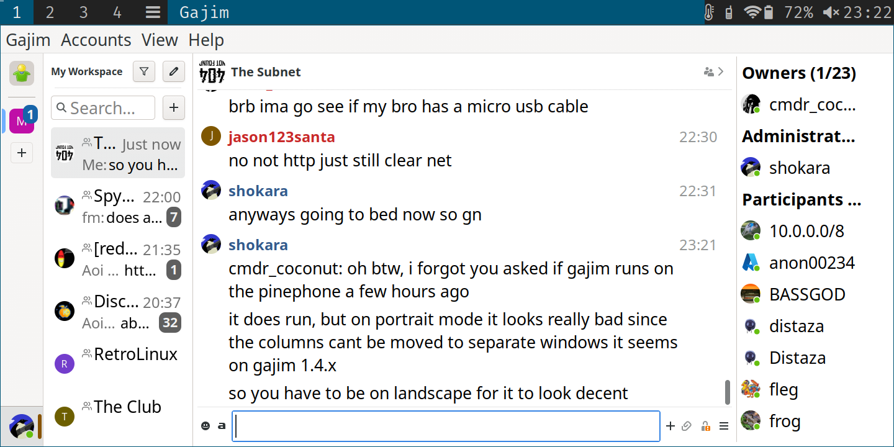

┃┗┫┗┳━┳┳┳┳━┳━┳┛┣━┳┳┫┗┫┗┳━┳┳┓
┃┏┫┃┃┻┫┃┃┃╋┃╋┃╋┃━┫┃┃┏┫┏┫┻┫┏┛
┗━┻┻┻━┻━━┻━┻━┻━┻━┻━┻━┻━┻━┻┛
Videos :: All Posts :: Tags :: RSS :: IMG :: About :: Test ::
THE.ARMADAI wonder now what now happening, how come, what for?
Heya internet. Whappens moew?

So this past 2 days has been gruelling, back breaking, barely withstandable labour to do a handful of things. I am basically going to try to make a web community under the pirate flag of THE ARMADA, do not repeat that without using all capitals, out of respect for the fallen comrades, thanks, but in making this community again it requires a code place. I mean a place to put the code, that we work on. Fun part about gitea is it has communities for things like this. When I first tried to make this community I also tried the google shit, that supposed business email, groups, etc shit, and I say shit because just like amazon I can't imagine how such a terrible corporation is s filthy rich.. Anyways. So I thought this time I would make a mail server on my Network Throughput I/O domain Packets.cc .. Anyways, and I found a thing, I haven't seen it yet, but in debian repositories mailman3-web (i think it was). I guess it uses a thing called HyperKitty and Django for a web app that handles mail? I'm willing to give it a try!
As well, I'm not sure why I'm struggling to understand and deal with figuring out how the F to host a uWSGI, or any WSGI, server for proxying my https from my FLASK PROJECT!! 😄😄😄😄 Yes, I am VERY much happy that I am learning a new, and in my opinion possibly better than Laravel, web application framework. I'm pretty sure very very few people know one thing about me, and that is that I really enjoy web applications and creating them gives me a helluva a good feeling when confronted with all the ideas I get for building web apps. This is truly what I was destined to do I think but anyways, so, I'm really stoked about Flask, and Pythons!
It is questionable whether the page is or will be operational, but MUSICPLACE.Vip and JUST TODAY! I managed to figure out how uWSGI works, at least enough that it's rendering the CSS files. It's a work in progress though, and I'm not giving out the password until it's stable. Afterwards I might ask a couple of folks if they want to poke it, meaning with a pen, just to know I build my flask app sturdy.
I shall return for more EPIC POST! GIT ER DRUNK, BAMBOOZLE HER, THEN PARTY AT MY POST! LoL I just made that up, stupid, I know.
PLUS: As for XMPP, which I fail to properly rage quit, and I am permanently a slave to, I discovered that one of my new years resolutions for 2024 will be that if I'm going to always be a strange and weird XMPP server operator, I might as well be better at it. Blimey trolls! OH AND ONE MORE THING: I shall be doing CSS/layout type modifications to the8woodcutter.sh, to make it actually worth visiting. There's a slight chance that this intention gets lost in the abyss of my many missions but let's propose it happens, and you might love the changes when they come, bon voyage! 😵
Tags: news, the8woodcutter, chunk, xmpp, flask, python, learning, uwsgi, webapps, webdevelopment, coding, sysops, devops, linux, css, html
My Desktop Today
Greetings people of internet!
If I may show you my awesome looking OpenSUSE Linux desktop, may you be in awe at the awesome look it is :D It uses xfce4 desktop environment, and if you inspect the second image you'll see more about my system ^^


I made the background image graphic art myself, here it is:

By the way, I wish I knew who the artist was of this, but this is the original image:

I hope you enjoy the art I post on here. I am once in a while improving all my stuff, or at the least the important stuff. So look out for some new improvements coming for TooFast.vip in terms of styles, as well as for The8Woodcutter.sh, namely the front page!
Tags: desktop, graphic-art, opensuse, linux, programming
Today's labor of love
So yesterday evening I was getting, once again, upset with my busted nvidia drivers and my libvirt not working. I needed the nvidia drivers because I wanted to test out if my Win11 disk (my slow SSD, bahaha) can run games if my entire one (1) screen is ran by nvidia. However I couldn't fix OpenSUSE-Prime (systemctl status prime-select) and it was dumping cores and stack traces and shiez. Then for no good reason virt-manager refused to load qemu/kvm:// and refused to connect. I like to speak a bunch like I know things, and when I do, I do know those things, but sometimes I can't be full of pride and think I'm very good if any good worth a shit at some stuff and I have / had no effen clue how to debug libvirt errors. Lest I even bothered, I had failed to work on nvidia prior to that.
As it may have been known, at least to some aliens, I have been running OpenSUSE (Open Source Community Based Enterprise Linux (RPM Type distribution of Linux)) and it's been a love hate relationship, mostly of love. I love SELinux and the fact that it's extra contexts sandbox core hardware, kernel and system level accesses and with OpenSUSE TUMBLEWEED (Not supported in Leap) SELinux enforcing targeted policy is an option in the installation. It can also (and I don't know how awesome or even a point this would be) apparmor at the same time. Being an enterprise linux it's got a lot of security, that's basically it. Centos 7 was my first enterprise linuxes and back when it actually came with compliance security schematics for like, government security and you could enable a security policy meant for a hospital or something... I imagine. OpenSUSE has taken me a while to get used to because of the linking of standard things like sudo cp /root/Xorg.conf.neww /etc/X11/xorg.conf or the grub-mkconfig -o /boot/grub/grub.cfg and typical MANUAL stuff that I'm used to with 📦ArchLinux📦 so it's pissed me off a few times, like when I had to discover that (and don't quote me on this, but it's how it appeared at the time) in order to change your desktop manager or your xsession (desktop environment) you needed to use a "helper" script lol helper, update-alternatives --config default.xsession and it brings up an interactive thing you can choose which DE/DM you want, if you have a few. However this, 'dynamic linking'? IS THIS WHAT THIS IS?!?!?! Is NO WHERE'S NEAR AS BAD AS ON Vultr.com or Ovh.com hosted host hosts. I've tried with all my might to overwrite and chattr +i /etc/resolv.conf yet that stupid cloud-init shit overwrites and links back and forth everything so bad it's maddening.
Suffice to say, I switched to Vultr.com for hosting for now. Not a big difference from linode. Considerably more expensive for less though and their cheapest "bare metal" server is 120USD / month (there was 2 available at the time). I got a $250 credit with vultr.com and I had fallen into some hardship IRL with money and a place to live and stuff costing me all my money, all. I couldn't afford liniode for the time being. Now however, I want to tell you that I am sad about this and I highly maximum rate Linode.com as I've been with them for I dunno how many years. ANYWAYS. SO I reinstalled my OpenSUSE over the night, took me a few hours to backup my shit, then I ended up wanting to try and install a bootloaderless (efi, secureboot, tpm) iteration on a bum partition, that failed, so I started again. THIS TIME, despite how much I HATE using anything other than NetworkManager I remembered to use Wicked network crap and have to relearn it. Suppose no big deal, as long as I don't come to a dead end for a week. The reason for that is because network bridge autoconfiguration for Xen hypervisor and Qemu hypervisor you need wicked or else you'd need to find a proper guide and follow it. Unless you're fkn leet and you run doez sockets anyhow.
I always use xfce4. If I use anything but xfce4 it's RARELY KDE/Plasma5 or it's usually i3wm. Sometimes I use lxqt (on archlinux) and already have i3wm install beforehand and it meshes better as the window manager for lxqt on 📦ArchLinux📦 than others I've tried, and got annoyed.
Lemme show you what I'm most happy with today, that I was spending my other half of my time doing:

So recently for something to do I made a weather.php script, a hitcounter.php script and I had another one I was going to do too, for The8Woodcutter.sh but I didn't like the color composition of the basically, erm, crap. Yea I had crap underneath the THE8WOODCUTTER banner and I ripped dat outta ther and were left with this space. I thought to myself two things: this is the way it was originally, big deal. As well, why not put a WIDGET or some WIDGETSsSSSs there? STUFF THAT I MADE MYSELF? STUFF THAT IS COMPLEX? I mean, no joke ass "plug it in" WP plugins that are a nightmare to tweak their obtuse OOP entangled shit so you get what you want but MAKE WHAT i WANT. I have a few ideas for portable widgets, that would be for #1: portable, #2: generally placeable on any webpage not running fucking erlang or some kookey shit like golang (sorry to those that really dig it) PHP or Python, like Flask, Django, Laravel, basic PHP, hell just an PHP enabled server that will simply just run php, but you gotta convert the files to, jokes, hopefully that doesn't ruin my post :| .... PHP FILES. NOT HARD NEWBS.
NOW I HAVE PUTTED A PORTABLE XMPP CLIENT ONTO MY BLOG PAGE WHICH IS HOSTED ELSEWHERE!
My score for this software at time of posting is ✪✪✪✪✪✪✪✪✪✫ [9.65/10]
(judged lesser because it has ONLY JUST BEGUN!)
Tags: conversejs, xmpp, the8woodcutter, blog, phpstuff, widgets, opensuse, enterprise-linux, linux, opensource
The8Woodcutter Gives Debian 12 (BookWorm) A Test Drive!
Hello! So my laptop battery died midway I was typing a message :| That was unhappy but what IS happy! Is DEBIAN 12 BookWorm!!!
I won't lie, I had a bit of beef with Debian 11 and how old and crusty it was getting so this new stuff is amaze. The most aggravating thing about Debian 11 was that apt-key became deprecated and the buggers never bothered to make a work around, a script, nothing, and the actual work around for adding a key and repository was a nightmare for the longest time until eventually all the online tutorials that I frequent for quick handy copying of commands have been updated to reflect the gpg-dearmor | > < cat | sudo tee crap. Now I am not against cli stuff by any means but I found it rather crap to have to try and remember this huge piped command. As well if you set your global umask to 0027 or harsher, yea, there's more you have to do too and it kept stumping me accidentally.
I am really hoping that BookWorm has finally fixed this, and I haven't encountered it yet. One last complaint (or two) is that since I often use LAMP servers and even often use Laravel composer version 1.x.x was a massive pain, then furthermore everything (I'll admit it, quickly) moved along to PHP 8 + whereas Debian 11 was STILL using composer 1.x.x and php7.4. I am SOOOOOOOOOOOOOOOOOOO happy for Debian 12 because I truly think Debian is likely the very best Linux distribution that exists. Bubuntu no dice.
So I started a Debian 12 VM, mind you a waaaaaay overpowered one with 10 CPU cores and 7GB of RAM lul, my computer be burly, but I have so far seriously enjoyed it. I am using intel gpu drivers atm because OpenSUSE update and I forgot to add a switch so it trashed my nvidia dkms, or whatever, but it's shiny, XFCE4 is JUST as it's expected. BUT BUT BUT THE BEST PART:
I INSTALLED APACHE2, FAIL2BAN, SSHD_CONFIG SETTINGS, LARAVEL 10.^, NPM, NODEJS, COMPOSER, MARIADB WITHOUT A SINGLE ERROR!!! Thank you SOOOOOOOOOOOO much Debian!!!!!!!!!
Tags: Debian12, the8woodcutter, software-testing, linux, gnu, FOSS, NewStuff
My friend has gotten a PinePhone!
My friend on XMPP chats, shokara, has gotten a PinePhone recently and I had one question in particular for him, knowing the PinePhone is a FOSS hardware and runs Linux, was if it can run Gajim. Gajim being my favorite desktop XMPP client :)
This is what he returned as an image and it's amazing! Because it literally is just like the desktop client! For sure PinePhone can run normal Linux software!

Tags: computing, linux, pinephone, xmpp